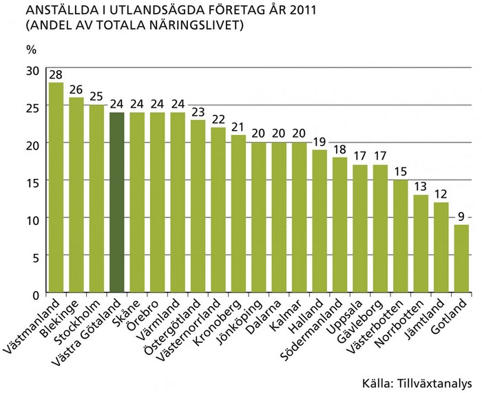

Det finns cirka 190 000 arbetsställen i Västra Götaland, inom både traditionella och i nyare branscher. Närmare 70 procent av alla arbetsställen utgörs av företag utan anställda. De stora och medelstora företagen (50 eller fler anställda) svarar för drygt hälften av alla anställda. De allra största arbetsplatserna finns inom offentlig verksamhet (vård, omsorg, utbildning) och fordonsindustri.
Näringslivsstrukturen i Västra Götaland överensstämmer ganska väl med den i riket men det finns några karaktäristiska drag. Även om näringsgrenarna inom tjänstesektorn sysselsätter flest människor, är tillverkningsindustrin mycket viktig och något större i Västra Götaland än genomsnittet i riket. Så är det framförallt i Fyrbodal och Skaraborg.
I Västra Götaland finns en stark tradition av tillverkningsindustri och kunskapsintensiva företag inom till exempel fordon, energi, life science, IT, kultur- och upplevelseindustri och maritima näringar. Livsmedelsindustrin är en annan betydande näringsgren. Västra Götaland står för en femtedel av landets livsmedelsindustri och för halva fiskenäringen. Här hittar vi även Sveriges petrokemiska centrum som ligger i Stenungsund, Sveriges möbelcentrum i Tibro samt hela Skandinaviens postorder- och textilcentrum i Borås.
Under de senaste årtiondena har det varit en snabb förskjutning av sysselsättning från tillverkningsindustrin till den privata tjänstesektorn. Mellan 1993 och 2011 har sysselsättningen i tillverkningsindustrin minskat med 7 procent, medan sysselsättningen i den privata tjänstesektorn ökat med hela 68 procent. Sysselsättningen ökade också inom bygg och jord/skog, med 43 respektive 10 procent. Samtidigt har antal sysselsatta inom offentliga tjänster varit i stort sett oförändrad. År 2011 var 44 procent verksamma i den privata tjänstesektorn, jämfört med 16 procent inom tillverkningsindustrin.
Öppenhet och internationalisering är karakteristiska drag inom Västra Götalands näringsliv. En betydande del av Sveriges utrikeshandel samt stora delar av den norska och finländska trafiken med omvärlden passerar genom Göteborgs hamn eller någon av de övriga västkusthamnarna. Näringslivet är till stor del inriktad på export och de västsvenska företagen har omfattande internationella kontakter. År 2011 arbetade 114 000 personer, eller 24 procent av den totala näringslivssysselsättningen, i utlandsägda företag. Av de utlandsägda företagen i Västra Götaland var år 2011 61 procent ägda av företag från EU 27 och 13 procent ägdes av företag från övriga länder. Norge är det vanligaste ägarlandet av utlandsägda företag i Västra Götaland.

Företagarfrekvensen i Västra Götaland är något lägre än i riket totalt. Nio procent av den totala sysselsättningen utgörs av egna företagare och företagare i eget AB. Av de nästan 76 000 företagarna i Västra Götaland är nära två tredjedelar egna företagare.
Nyföretagandet har ökat stadigt de senaste åren. Nyföretagarfrekvensen i Västra Götaland är emellertid lägre än i de två andra storstadslänen Stockholm och Skåne. Under 2012 startades cirka 11 800 nya företag varav drygt 3 000 startades av kvinnor. Ungefär vart femte företag startas inom industri. Inom tjänstesektorn startas flest företag inom finansiell verksamhet och företagstjänster.
Historiskt sett har industrins investeringar i Västra Götaland utgjort en stor del, cirka 25 procent av Sveriges totala industriinvesteringar. Under lågkonjunkturåren 2007–2011 föll industriinvesteringarna i Västra Götaland, mätt i volym, med nästan 50 procent. Minskningen var betydligt större än den i riket och kan förklaras av ett stort antal konjunkturkänsliga industrier i Västra Götaland. År 2012 började investeringar att öka igen, om än svagt.
Västra Götaland är en ledande inom miljödriven affärsutveckling. Miljöteknikområdet1 är en snabbt växande bransch och antalet sysselsatta i miljöteknikföretag i Västra Götaland är störst i hela landet. Även år 2003 hade länet ett stort antal sysselsatta inom miljöteknikföretag. Västra Götalands exportandel inom miljötekniksektorn har också varit hög både år 2003 och 2010.
1 Miljöteknik är all teknik som direkt eller indirekt bidrar till en bättre miljö. Miljöteknik innefattar sådana varor, system, processer och tjänster som ger tydliga miljöfördelar i förhållande till befintliga eller alternativa lösningar, sett ur ett livscykelperspektiv. Det rör sig om tekniker som minskar utsläpp av föroreningar, som renar vatten och luft, som använder energi och naturresurser mer effektivt.
Västra Götaland är Sveriges näst största turismregion, efter Stockholm. Turismen är en snabbt växande näring och en viktig tillväxtmotor för sysselsättning. Senast uppmätta turistomsättningen för Västra Götaland uppgick till drygt 35 miljarder kronor (år 2012). Shopping står för knappt hälften av omsättningen och kommersiellt boende (hotell, vandrarhem, stugbyar, camping och gästhamnar) för en femtedel. Turismen i Västra Götaland sysselsätter cirka 23 000 personer årligen, vilket motsvarar en ökning på över 10 procent från 2000-talets början. År 2012 hade länet 8 miljoner kommersiella gästnätter (inklusive camping), vilket innebär att gästnätterna ligger på ungefär samma nivå som 2011. Det är campingnätterna som har minskat under 2012, framförallt beroende på det ostadiga vädret.
Antalet kommersiella gästnätter har haft en stabil tillväxt under hela 2000-talet. Västra Götaland har cirka 16 procent av det totala antalet gästnätter. Inom campingen är andelen högre, cirka 20 procent. Göteborgsregionen har de flesta gästnätterna inom hotell, stugbyar och vandrarhem. Två av tre gästnätter sker där. Fyrbodal har de flesta gästnätterna inom camping, drygt 60 procent.
Exportandelen, andelen utländska gästnätter, har varit relativt stabil över åren och ligger på cirka 27 procent i Västra Götaland. De i särklass flitigaste utländska besökarna är i tur och ordning norrmännen, tyskarna, danskarna och britterna.
Norrmän reser till Sverige för att handla. Den norska momsen på livsmedel, punktskatter och tull på importerade varor och andra skillnader mellan de svenska och norska ekonomierna gör att de norska hushållen tjänar pengar på dessa resor. Gränshandeln har inneburit att handelscentra och butiker längs gränsen vuxit snabbt. Handelns utredningsinstitut (HUI) har under ett antal år genomfört webbenkäter där man mäter alla turismresor.
Mätningen omfattar även vilken typ av varor som köps. Under 2012 handlade norrmän i Sverige för 27 miljarder kronor, varav 15 miljarder på dagligvaror, 8 miljarder på sällanköpsvaror och 4 miljarder på bensinstationer. Västra Götaland och Värmland dominerar med 8 miljarder vardera. I Västra Götaland står dagligvarorna för 5 miljarder, eller 50 procent av denna konsumtion.
Västsverige har under flera år placerat sig högt både nationellt och internationellt när det gäller satsningar på forskning och utveckling (FoU). Enligt den senaste europeiska sammanställningen från 2010 har Västsveriges (Västra Götaland och Halland) ställning sjunkit lite i förhållande till de tidigare redovisningarna men ligger fortfarande i topp i ett europeiskt perspektiv.
Näringslivets FoU-utgifter i Västra Götaland motsvarar 3 procent av BRP, medan genomsnittet för europeiska regioner ligger på 1,2 procent av BRP.
This is just a landing page.
Back